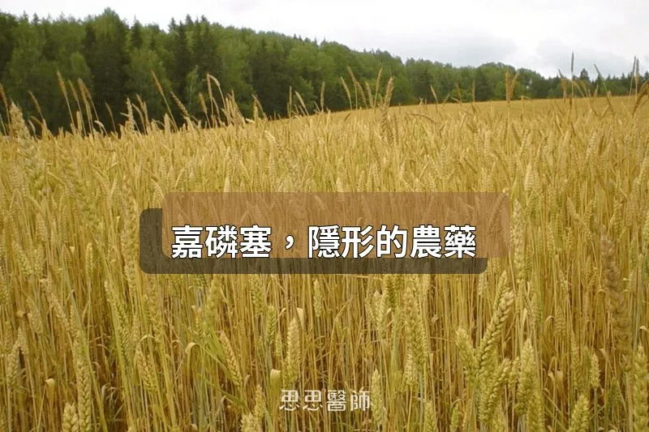

嘉磷塞，隱形的農藥

如果你有在看國外的健康書籍或 podcast，「嘉磷塞（Glyphosate）」這個名字應該不陌生。它是全球使用量最大的除草劑主成分，最廣為人知的商品名是孟山都（現已被拜耳收購）出產的 Roundup。在台灣，它也是使用量第一的除草劑，2017 年的使用量高達 1,463 公噸。
嘉磷塞的作用機轉是抑制植物體內一條叫做莽草酸路徑（Shikimate pathway）的代謝通道，這條路徑人體細胞沒有，所以早期認為對人體相對安全。但後來越來越多研究指出，它對人體細胞的影響並不是「完全沒有」，其中最受關注的一個面向，是它對粒線體的干擾。
研究顯示，嘉磷塞會直接抑制粒線體電子傳遞鏈的複合體 II 和 III（Succinate dehydrogenase 和 Cytochrome c reductase），這兩個複合體是粒線體製造 ATP 的核心零件。抑制之後，ATP 生產效率下降，同時大量製造粒線體活性氧（mtROS）。ROS 在正常劑量下是細胞的訊號分子，但過量就變成攻擊粒線體本身的武器，讓粒線體結構受損、功能退化。
細胞對這種狀況的第一反應是啟動「粒線體自噬（Mitophagy）」，也就是把受損的粒線體打包清除掉。這個機制在短期是保護性的，但長期慢性暴露的情況下，清除速度跟不上損壞速度，細胞的能量供給就開始入不敷出。更進一步，氧化壓力過高時，粒線體會觸發細胞的內在凋亡路徑，加速細胞死亡。
2025 年一項以美國 NHANES 大型追蹤資料庫為基礎的研究，把尿液中嘉磷塞濃度和死亡率做連結分析。結果在整體人群中沒有看到顯著關聯，但在氧化壓力指標較高的族群中，嘉磷塞暴露使全因死亡率的風險比（HR）上升至 2.679。這個數字告訴我們一件事：嘉磷塞的傷害，在粒線體和氧化壓力本來就已經承受壓力的人身上，才最明顯。
那麼，哪些食物的嘉磷塞殘留量特別高？燕麥是大家最常聽到的，美國 FDA 2023 年的資料顯示，83% 的美國本土燕麥樣品都驗出嘉磷塞。但燕麥只是其中一個，這裡有一個很多人不知道的農業操作，叫做收穫前催枯（Pre-harvest desiccation）。
這個做法是指，農民在作物快要成熟時，直接對田地噴灑嘉磷塞，讓植物的莖葉快速乾枯，讓穀粒同步熟成，方便機械一次性收割，也能降低天候變化的影響。這不是基改作物的專利，反而是非基改的小麥、大麥、燕麥、豆類等等的常見操作。結果就是：農藥在收穫前不久才剛噴上去，直接殘留在可食用的部分。
除了燕麥之外，以下這些食物的嘉磷塞殘留問題也值得注意：小麥和全麥製品的殘留量在穀物類中屬最高之列；大豆方面，美國 FDA 在 67% 的樣品中檢出嘉磷塞；玉米是 63%。鷹嘴豆（Chickpeas）、扁豆、豌豆、大麥這些豆科和穀類也都有催枯噴藥的紀錄。葵花籽、杏仁、葡萄（進而延伸到葡萄酒）也有殘留被報告。
回到台灣的情況。台灣有針對部分食物訂出嘉磷塞的殘留容許量：燕麥是「不得檢出」，大豆是 10 ppm，小麥是 5 ppm。標準訂了，但問題在於偵測。嘉磷塞是極性農藥，台灣衛福部現行的標準多殘留農藥篩檢方法（410 項）根本偵測不到它，需要另外使用獨立的特殊分析方法才能驗出。這代表在日常的市場抽驗中，如果沒有特別加做這個項目，嘉磷塞殘留就是隱形的。
2026 年 2 到 3 月，消費者文教基金會抽驗了 20 件大豆蛋白粉和燕麥樣品，其中 1 件加拿大進口燕麥片驗出 0.1 ppm 的嘉磷塞，違反台灣「不得檢出」的標準。這只是一次小規模的抽驗，能檢出就已經說明問題存在。
很多人以為買有機就有保障，但這裡要說清楚一件事：有機認證的驗證流程使用的是同一套標準多殘留農藥篩檢，同樣偵測不到嘉磷塞。有機農法本身當然禁止噴灑嘉磷塞，問題不在於種植過程，而在於土壤、灌溉水源的殘留，以及驗證時根本沒有針對嘉磷塞做專項檢驗。有機標章驗的是「這批貨裡有沒有被允許的合成農藥」，但因為嘉磷塞不在標準篩檢名單內，就算真的有殘留，也不會被驗出來。
這不是說有機沒有意義，整體而言有機農產品的農藥暴露風險確實較低。但如果你特別在意嘉磷塞，在挑選進口燕麥、豆類、全麥製品時，有機標章本身並不能給你這方面的保證。比較有意義的指標，是品牌是否有額外標示嘉磷塞專項檢驗報告，或是通過 Non-GMO Project 等有明確農藥檢測規範的認證。
參考資料
2. The effects of low-toxic herbicide Roundup and glyphosate on mitochondria — PMC, 2022
4. Glyphosate as a Food Contaminant: Main Sources, Detection Levels — PMC, 2024
5. 消基會抽檢燕麥嘉磷塞超標報告 — 自由時報, 2026
（本文由我規劃架構與觀點，並協同 AI 校正與潤飾語句）
 空腹小雞跟思思醫師一起斷食，順便養一隻小雞來養小雞 →
空腹小雞跟思思醫師一起斷食，順便養一隻小雞來養小雞 →
好朋友週信
每週五一封：《健康駭客週報》這集的研究重點，加上家醫專欄這週的新文章。免費，隨時可以退訂。
延伸閱讀

魚的重金屬，不是只有看汞那麼簡單
選魚時應看食物鏈位置，沙丁魚、鯖魚等小型魚汞含量遠低於大眼鮪魚，且含硒可中和汞；文中也談到鎘、鉛、砷等其他污染物。

不小心吃進的空氣，傷害你的血管與腸道
作者引用《Environment International》研究指出，吞入的超細懸浮微粒會改變腸道菌相、加重動脈硬化與肝臟氧化壓力，並建議護腸。

PM2.5如何駭進我們的健康
PM2.5 是奈米級載體，會把重金屬等毒素帶入血液並引發氧化壓力與慢性炎症，作者建議活化 Nrf2、補充 Omega-3，並在室內用 HEPA 濾網。